Overview
In this project, we primarily focused on implementing ways in which we could represent curves, surfaces, and generally how we could model geometric shapes. First, we delved into how we could use de Casteljau’s algorithm to help model curves and surfaces by using subdivisions of control points and parameterized time steps to model movement along a curve. We then extrapolated this to surfaces, which could be explained as higher-dimensional representations of Bezier curves with multiple parameters. We then focused more on geometric modeling through meshes, where we first implemented graph traversals of nearby neighbors in order to accomplish tasks in our shading pipeline, averaging nearby vectors in order to find a better representation for how to shade certain areas within our geometric figures. Then, our next two parts involved deeper graph interactions, where we had to perform edge flips and splits amongst our mesh as these would help us subdivide our image and give smoother shaping and more complete representation of the triangles that make up our geometric figures. In these parts, we also gained a deeper understanding of how pointers work within our graph/mesh representation, and how we can set the neighbors and fields of edges, halfedges, vertices, and faces to create new triangles or update existing triangles within our image. Finally, we put all of these tasks together when implementing loop subdivision, as we had to perform many edge flips and splits, as well as used vector operations and weighted averaging in order to set new positions for our vertices and edges. In this part, we aimed to develop higher-resolution polygons in our mesh and had to combine techniques from parts 1-6 in order to fully complete loop subdivision. Additionally, we learned the process a geometric model goes through in order to be represented in better resolutions from coarse initial meshes, and how these techniques used in our homeworks today are prevalent in real-world graphical design and modeling, and how they are continually used to create higher resolution images, better video gameplay, and even in virtual reality applications today to create more visually appealing simulations. Overall, we learned a lot about how geometric modeling, simulations, and generating high resolution graphics worked in real-world graphics pipelines and how the many techniques we implemented in this project are quite commonly used by popular technologies today.
Task 1: Bezier Curves
De Casteljau’s algorithm is a recursive algorithm used to find a point on our curve representing the parameter t as our Bezier curve progresses through time. This algorithm takes in a Bezier curve with n control points and recursively subdivides each of the lines between these control points in order to find an “intermediary” point which corresponds to the point on the curve at time step t. More specifically, we can subdivide each of these lines through a weighted average where we put weightage t on one point and 1 - t on the other and correspondingly find this weighted midpoint and continue subdividing until we have one point left corresponding to our curve at timestep t. In the code, I was able to implement this by subdividing our line n - 1 times with a for loop based on our n control points, then returning these new intermediary n - 1 points.
As follows, our screenshots (in order) highlight the Bezier curve first with 6 control points, then successively at each recursive subdivision stage of our algorithm, and finally we have the curve shown once subdivision is completed, and our last image corresponds to when our control points are moved around and time step parameter t is changed.
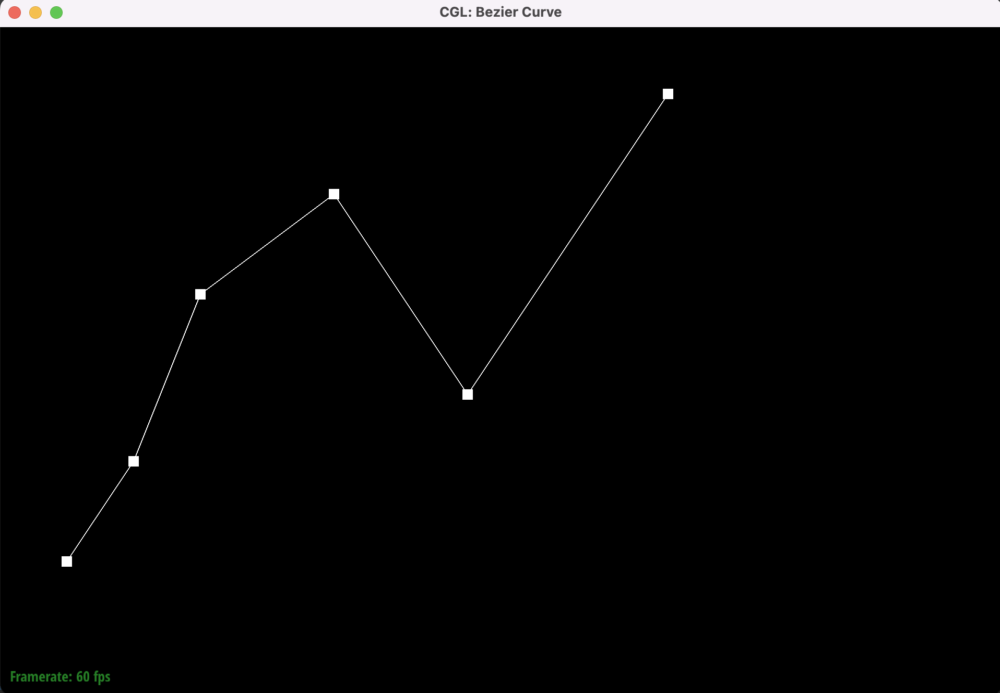
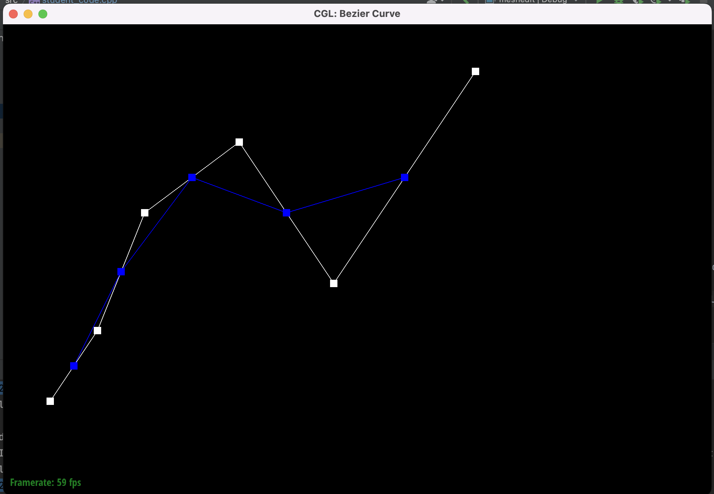
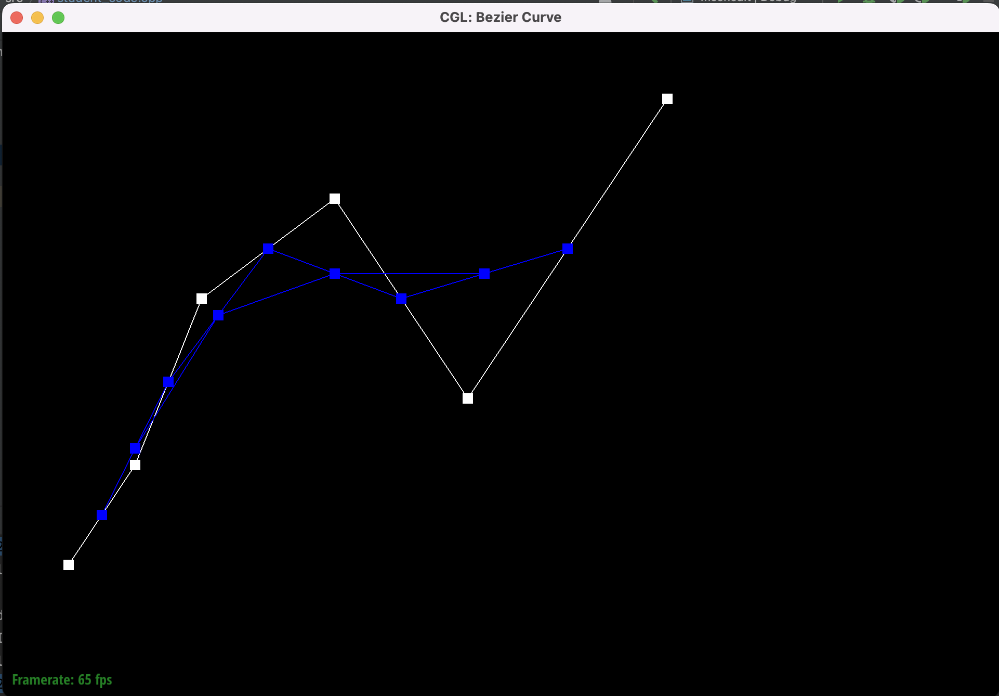
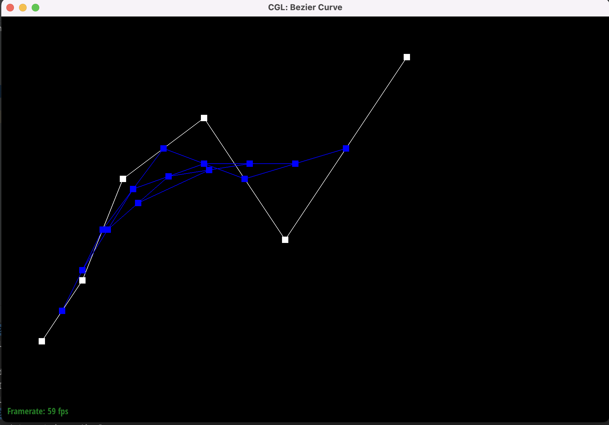
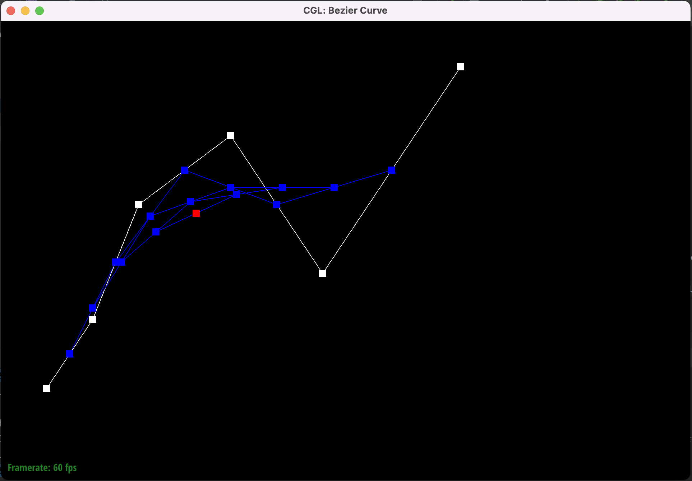
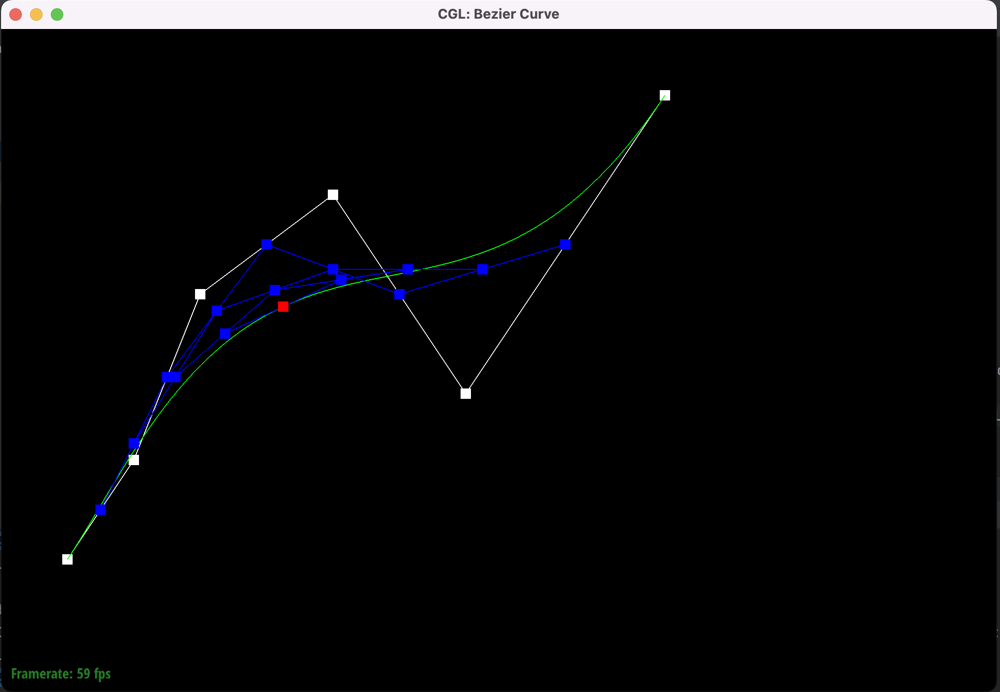
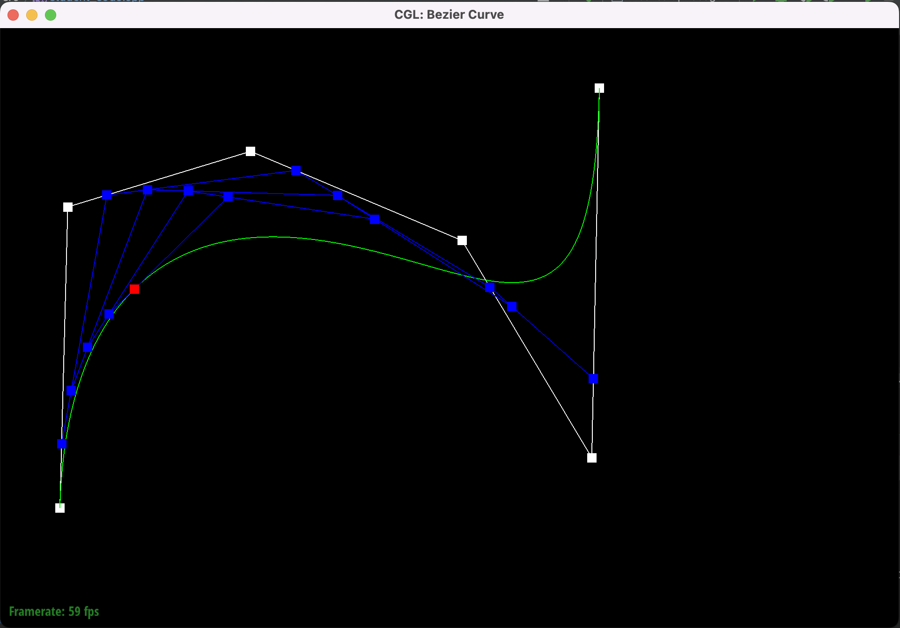
Task 2: Bezier Surfaces
Given our description of de Casteljau’s algorithm in part 1, we first implemented one stage of subdivision for a set of n control points, returning the n - 1 intermediary points. In order to fully evaluate Bezier surfaces, we must perform this computation for three-dimensional points (which is almost the exact same code as in part 1, except using three-dimensional vector data structures instead of two-dimensional vector data structures). Then, we had to implement evaluate1D, which essentially required us to call our previous algorithm repeatedly in a while loop on each new set of points (which had size one less than the previous set of points) until we only had our final single point representing the curve at given time step t. Finally, since we needed to evaluate Bezier curves along two axes, we had to implement the evaluate function, which required us to call evaluate1D on our existing control points, with our first parameter value of t (denoted u in the code), then call evaluate1D again with our second parameter value t (denoted v in the code) on the new set of control points along our two axes. We see that de Casteljau’s algorithm extends to Bezier surfaces as Bezier surfaces can be evaluated as Bezier curves along two different axes (given u and v), so the approach we took for implementing Bezier curves could be extended to implementing Bezier surfaces by using de Casteljau’s algorithm multiply times along each one of our axes. More specifically, we could run our full Bezier curve evaluation (evaluate1D, based on our evaluateStep functions) for each for our control points with given parameter u, then run de Casteljau’s algorithm with these new points with parameter v – giving us our 3D curve along two axes, which comprises a topological surface. As a result, our code essentially just runs de Casteljau’s algorithm over multiple axes and over each set of our control points, and performs the same computation as in part 1 except with 3D vectors instead of 2D vectors. Our screenshot of the teapot bezier surface is shown below:
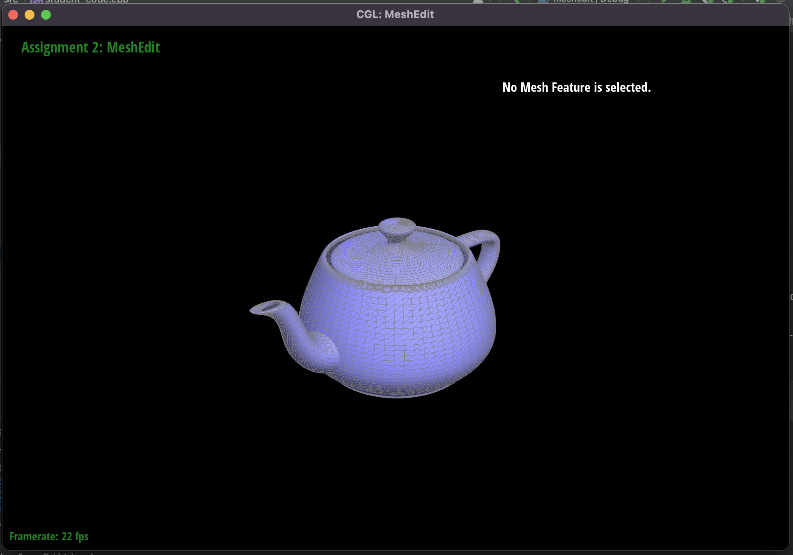
Task 3: Vertex Normals
I implemented area-weighted vertex normals by essentially iterating over all the faces incident to our current vertex by iterating over all the halfedges and calling their twin and next methods in order to obtain the incident faces to our current vertex. I then calculated two vectors within the plane of the current face by subtracting vectors representing the edges, then took the cross product of this and added this to our final total. By taking the cross product of two corresponding edges within the plane of each incident face, I was able to calculate a normal vector which was weighted by the area of the face since the cross product involving the length of each vector creating the edges of a triangle would be weighted according to the area of the triangle itself. Then, (given the order of the cross product since a x b = - b x a), I would add this to my total for our current vertex, and continue looping until I had reached the initial halfedge referenced by our vertex object. Then, I returned this total divided by its norm to get a unit vector representing the shading for this vertex. I have attached the corresponding screenshots of the teapot.dae file below to highlight the benefit of the area-weighted vertex normals, with the flat shading and Phong shading respectively.
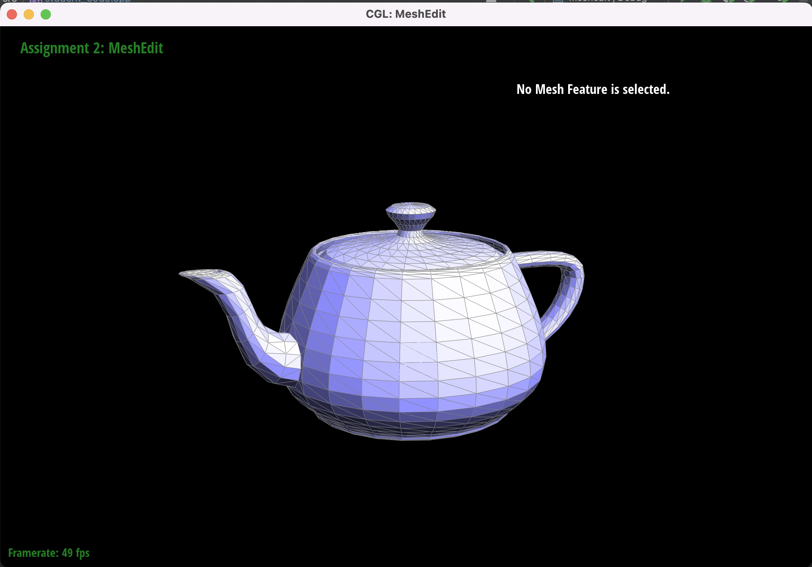
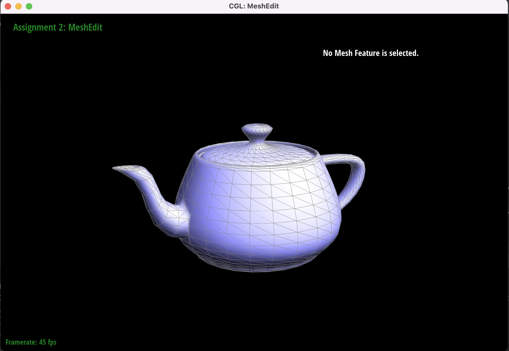
Task 4: Edge Flips
In truth, implementing this function was quite simple once I had drawn out a picture of the corresponding edges, vertices, half-edges, and faces before and after a vertex flip occurred. I had drawn this out and used the reference images within the spec to assist me with drawing this picture (with the document attached in the spec located here). Once I had the correct picture for how to perform an edge-flip, I only had to use the correct order to call halfedges and their corresponding twin and next methods, then label my vertices, faces, edges, and half-edges correctly when calling setNeighbors(). The primary challenges with this method were with drawing a picture of the correct before and after of an edge flip, and once this picture was correctly set, I had to write the corresponding code to set correct pointers to each edge, vertex, face, and half-edge post flipping the edge. Additionally, I had to return our vertex automatically if I was on a boundary, which was an easy function call to put at the top of the method (I did not complete the extra credit in this function). Overall, I implemented the edge flip operation by drawing the exact picture for how an edge flip should relate each of its corresponding attributes, and once this graph was correct the code was simple to follow as it just entailed updating corresponding graph elements. As this part was quite formulaic and the spec was quite helpful in linking documents that illustrated how to perform an edge flip, I didn’t run into many issues debugging this part or have any unique or interesting behavior when compiling and running this code. The screenshots for our teapot before and after edge flips is shown below:
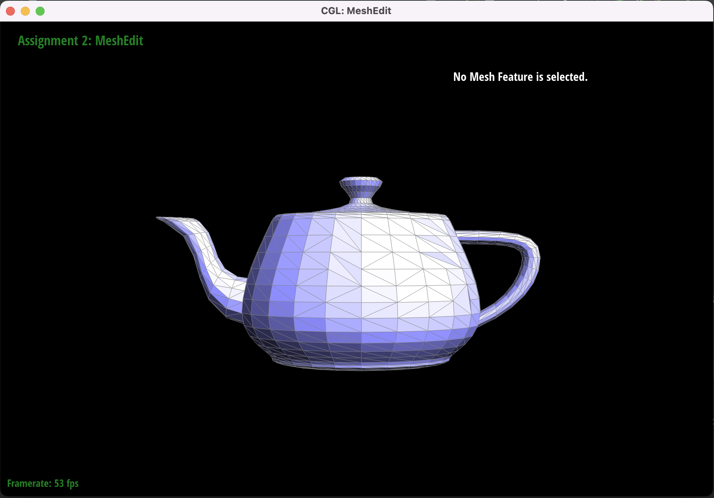
Task 5: Edge Splits
Following from part 4, implementing the edge split function was quite similar since we had to ue the same approach – drawing the correct pictures of how an edge split would occur and which new edges and vertex to fill in, then implementing the corresponding code to set each graph elements’ neighbors and the vertex position. Once I drew this picture, I could follow in the same path as in part 4 where I could set each edge and halfedge’s neighbors correctly, then set the position and the neighbors of the new vertex occurring from the split, and finally set the old edges and vertices’ neighbors to their updated neighbors and set our new triangles. As before, the primary challenge in this part was drawing the correct image for how an edge split would occur and which pathways I should choose. Another challenge in this part and an interesting debugging challenge was that initially I had set up eight new halfedges instead of six as I thought that the split would cause us to require to delete the two prior edges and synthesize eight new ones to represent our split break; however, once I realized that I could just repurpose two of the previous edges and set their bounds between their old vertex and the new split middle vertex, I was able to fix my code and compile and run it correctly. The primary challenges when implementing this, however, were with drawing our picture and figuring out how to correctly label which halfedges, which new edges, which new faces, and how to ensure our old edges had their new neighbors set correctly, and that we could traverse our new set of triangles well. Additionally, here, we didn’t do the extra credit and just returned the halfedge’s vertex when our split edge was on the boundary of our image. In order, our screenshots are our teapot mesh before edge splits or flips, after edge splits (but not flips), and after edge splits and flips.
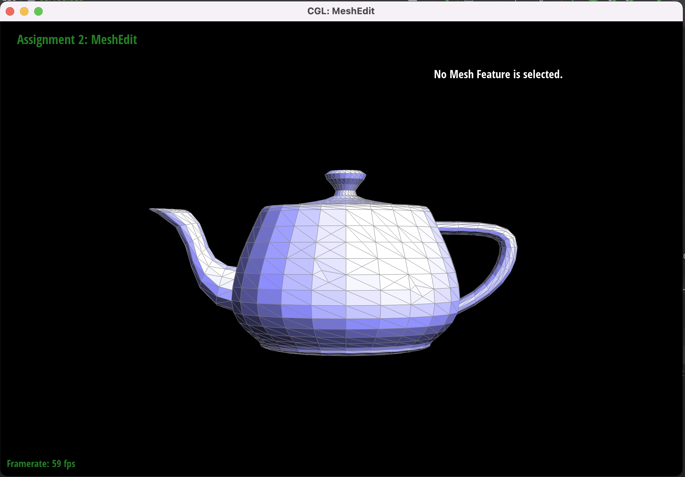
Task 6: Loop Subdivision
When implementing loop subdivision, I chose to follow the steps of the algorithm as recommended in the specification and by the staff. First, I had to calculate the new position of an old vertex so I looped through the old vertices in the mesh and provided (1 - n * u) formula described in lecture in order to calculate the new position for each vertex and saved it in the newPosition field within each vertex object/struct. In this formula, we had to calculate the sum of each neighboring vertex, so I iterated through each neighboring vertex until reaching our original vertex in the same way as computing the area-weighted vertex normals in part 3 (except without having to do any cross product computations, just adding the positional value of each neighboring vertex). Next, I had to calculate new positions of our vertices associated with splitting the shared edge between two triangles, and I could iterate over all edges within the old mesh and follow the formula ⅜ * (A + B) + ⅛ * (C + D) as provided in the spec and lecture, where I could calculate A, B, C, and D using the the current edge’s halfedge and their corresponding neighbors and twins as they are iterated through in the triangles formed by (A, B, C) and (A, B, D). Once I had this value for the new position of the vertex splitting the shared edge between these two triangles, I could set this value as the new position for the current edge iterated through in our loop. Additionally, I had to add all of these edges to another iterator since in the future parts of this algorithm, we would have to iterate through all the edges of our old mesh and mark them as new or old and update their positions.
Next, I iterated through all of the edges in this vector (which has all the edges in the old mesh), and I called splitEdge on each of these edges, setting the created vertex as new, setting the split vertex’s position equal to the position calculated in the previous loop (with our A + B, C + D formula), then I had to set isNew for each of the four interior edges in the edge split triangle as True or False, with two of the edges set to new and two others set to old, representing the edge prior to loop subdivision. We iterated through the edges the same as in multiple past parts, where we called twin and next methods until we reached our initial edge. Then, we iterated through all of the edges in the new mesh, checking whether an edge is connected to one new edge and one old edge, and flipping these edges if we find one of these new edges satisfying our old-new match criteria. Finally, we iterated through all vertices in our mesh and set their current positions (denoted as the position field in each Vertex object) to their newly calculated position (denoted as newPosition). With all these steps done, our loop subdivision algorithm was finally complete and yielded positive results when testing with multiple different DAE files. Since we followed the spec closely, the only real debugging issue we had was with flipping the edges since the logic for this if statement was a bit tricky and easy to write incorrectly if not being exceedingly meticulous, where on occasion our code would flip edges between old-old or new-new seemingly non-deterministically.
Overall, we didn’t have much issue implementing this part of the code, primarily just issues with tediousness or mistakes rooted in ignorance. From our screenshots, we’ve noticed that post loop subdivision, many meshes have much seemingly smoother outlines and have much fewer sharp edges and corners. This is likely due to loop subdivision creating so many triangles within our meshes that previously sharp corners and edges would be quite small post subdivision, so it would be harder to discern sharp edges or corners due to the vast number of triangles making the shape look somewhat “rounded-out”. On occasion, such as with the cube DAE, we notice that initial sharp corners and edges can make a lasting impact on our image by causing it to be subdivided in a skewed manner, with some corners not getting rounded out like others, and we were able to somewhat fix this by initially flipping and splitting the internal edge in the cube DAE. By adding this initial edge flip and edge split, we were able to get the cube to divide much more symmetrically than without any initial edge flips or splits. This is likely due to the fact that prior to having an edge split first, the cube DAE had two opposing triangles (forming a square-shaped object), and thus when subdividing these triangles within our mesh, we were able to smoothen out these triangles and their edges but not the opposing corners and they could not be subdivided on the boundary and continued to be sharp. With our preprocessing, we were able to make these corners parts of two distinct triangles, allowing them to be included in subdivision and thus end up with smoother edges than without our prior flips and splits. The screenshots following show detailed looks at how meshes behave after loop subdivision for particularly sharp corners and edges in images using the teapot DAE as a reference, and in subsequent screenshots, show the effect of initial edge flips and splits in creating more rounded and symmetrical images for the cube post-subdivision.
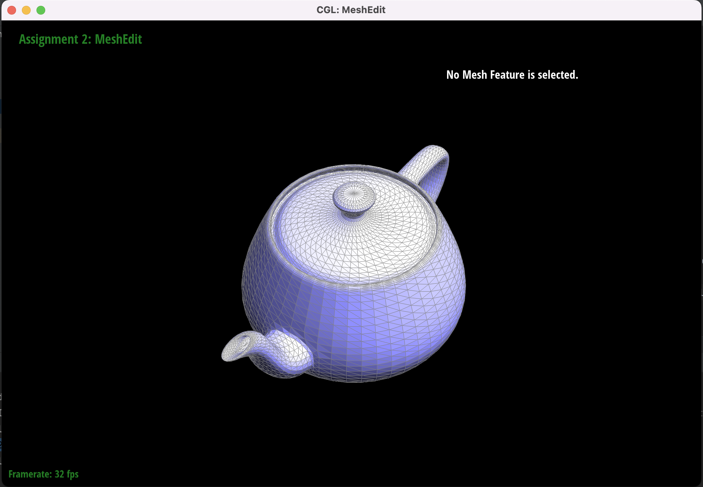
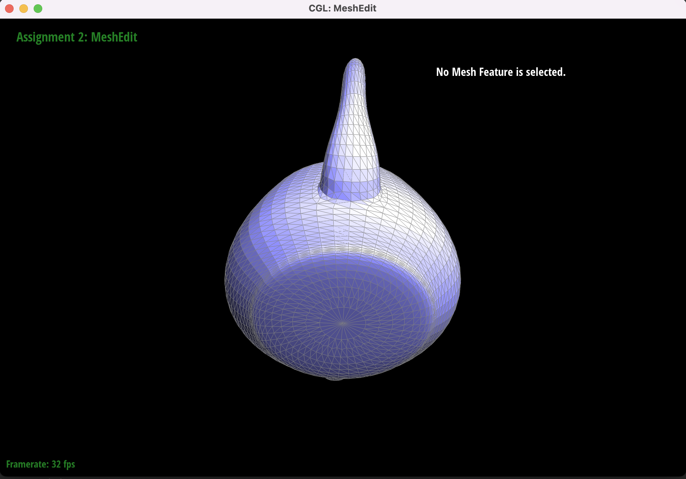
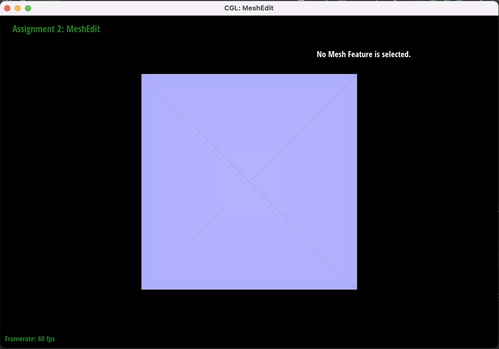
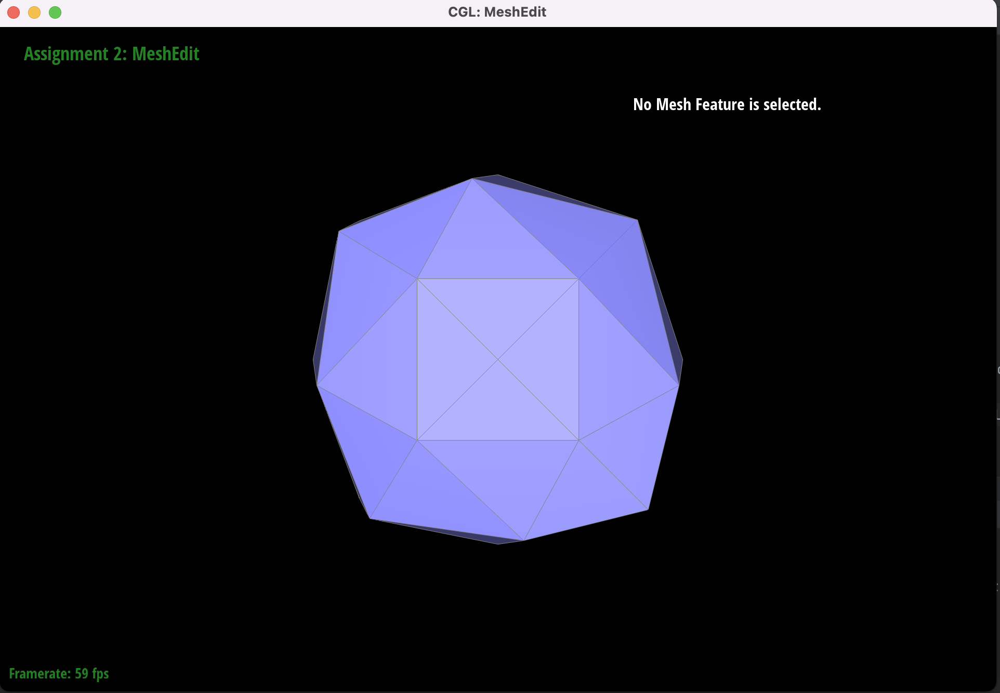
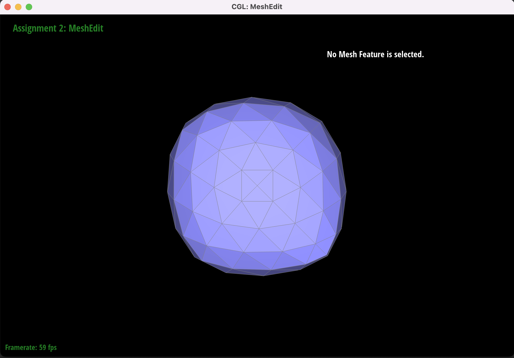
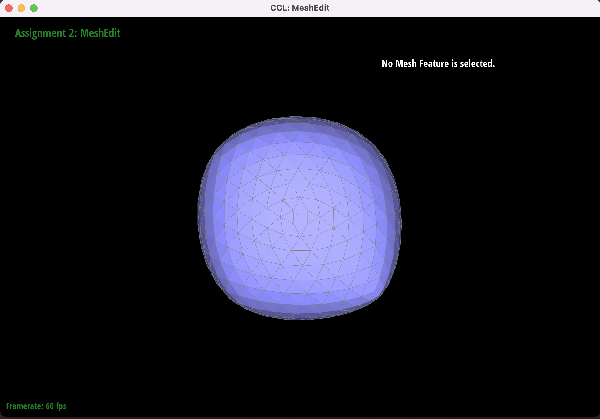
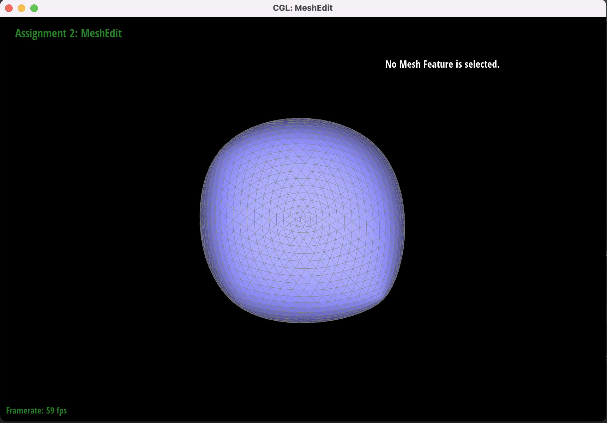